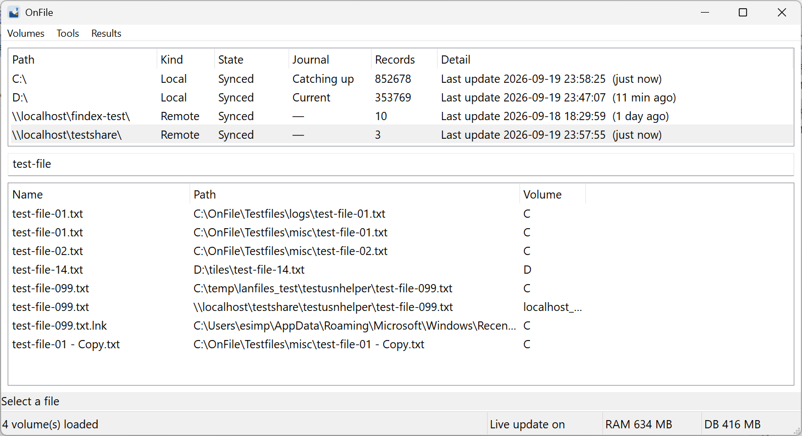

You pick the locations
Add NTFS volumes and network shares. Nothing else is in the index.
Free Windows app
Onfile indexes names and paths on the local disks and network shares you choose. Open the file, open the folder, copy the path or name, or open a command line in that folder—without waiting on Explorer.
Free. Name and path search only. You add each drive or share.

You control the index. Onfile does not pretend every location behaves like C:.
Add NTFS volumes and network shares. Nothing else is in the index.
Local NTFS can follow the change journal. A share is scanned when you ask—not while you are trying to use the PC.
Find the file, then open it, open the folder, copy the path or name, or open a command line in that folder.
Search is the means. These are the jobs after you find the file.
1.0 is name and path search on locations you add. That is the whole product.
Short answers. The limits are intentional.
Everything is excellent for local NTFS names. Onfile is built around locations you add, including shares you scan on demand, and actions on the result.
After a scan, you search the index. The scan itself depends on the share. You start that scan; Onfile does not pretend a network folder is a local MFT.
No. Names and paths only.
Onfile opens a command line in the folder that contains the file. Which terminal host you get may change in a later version; 1.0 is “a command line in that folder.”
Yes. Onfile is a free Windows app.
Download the installer from the latest GitHub Release. If SmartScreen is cautious with a new unsigned build, that is Windows being Windows—open the release page and grab the file from there.